Before you begin this section, download this folder QC. You will use this folder and its contents to learn and practice this section.
Overview
A typical whole genome sequencing process involves sample preparation,
library preparation and sequencing. Errors occurring at each of these steps can negatively
impact the quality of the sequence information. For example, the samples could be mixed
during sample or library preparation, or errors can be encountered during the sequencing
itself. If these errors are not removed from the raw reads, they might be incorporated into
your analysis output and would be harder to resolve later on. Therefore, it is important to
perform quality checks on the raw sequence reads before starting your analysis.
Here are some of the parameters for NGS data quality control.
- Check for primers and adaptors
- Trim low quality ends
- Remove low quality reads
- Remove short sequences
- Remove reads with a high proportion of ambiguous bases (“N”)
- Remove duplicates
There are several bioinformatic tools available for evaluating read data quality, here we will discuss one of the widely used tools, called FastQC Links to an external site. which is made available by the Babraham Institute. The tool also has a graphical user interface (GUI) so can be used without using the command line. The GUI aspect of this tool has been described in the F2 module.
In this course, we will be using the command line.
Tool(s)
We will be using FastQC tool to carry out quality control on reads. If you do not
have this tool in your local machine, you can download them from a docker repository using the
command: docker pull staphb/fastqc
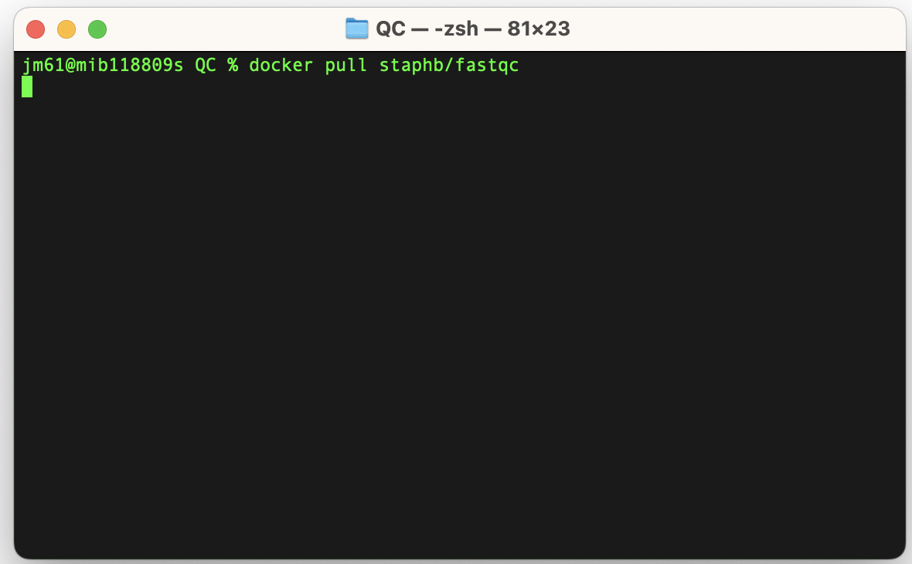
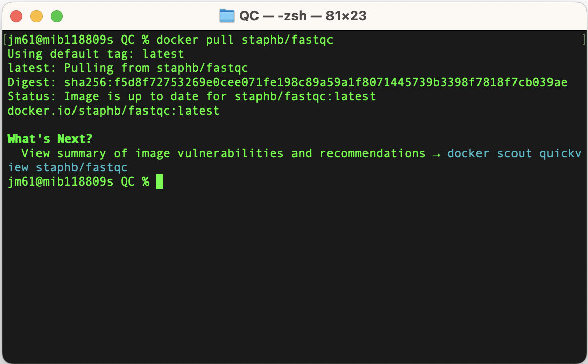
Quality Control (QC)
- Download data to be analysed using the FastQC
- Execute Fastqc
We will be using the reads (21999_7#176_1.fastq.gz and 21999_7#176_2.fastq.gz) to learn the FastQC tool.
We will navigate to the folder containing these fastqs: cd QC
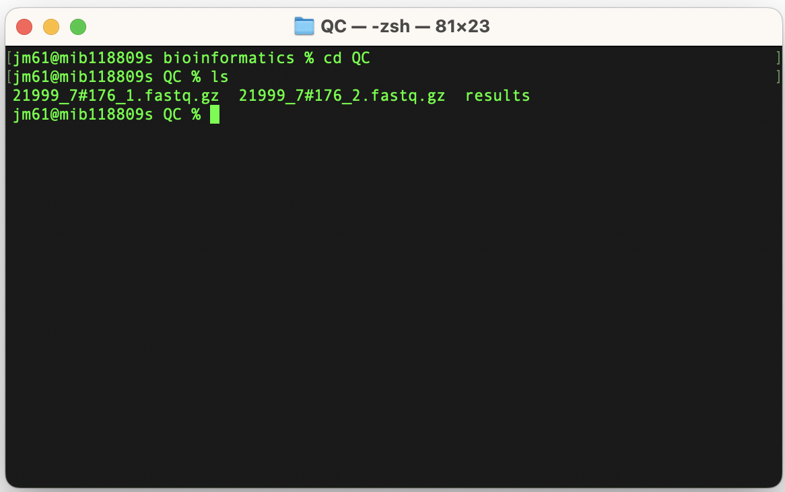
To execute the FastQC program on the reads (21999_7#176_1.fastq.gz and
21999_7#176_2.fastq.gz), run the command: docker_run staphb/fastqc fastqc
21999_7#176*.fastq.gz
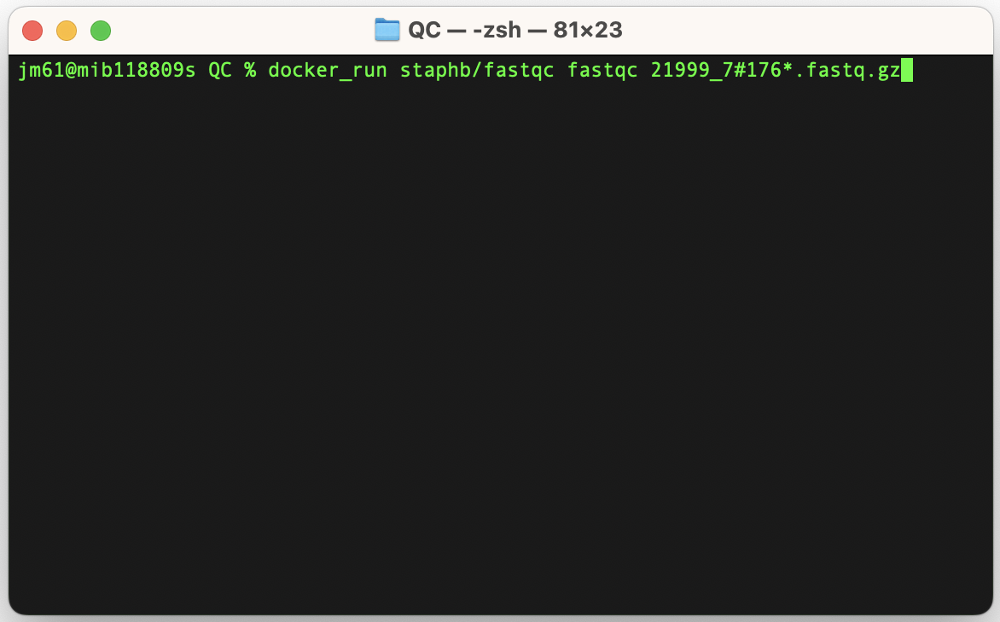
An explanation of this command is as follows:
docker_run:is a function to start a container. The function includes the following flags: docker run --rm=True -u $(id -u):$(id -g) -v $(pwd):/data "$@". To understand the docker_run function read the section [Data, Tools and Computational Platforms (Docker)]
staphb/fastqc_v0.11.9: is the docker image [staphb - represents the repository and fastqc_v0.11.9 - represents the container image]
fastqc: is the tool
21999_7#176*.fastq.gz: input files; the (*) sign tells fastqc tool to run on files that start with 21999_7#176 and end with fastq.gz in the folder
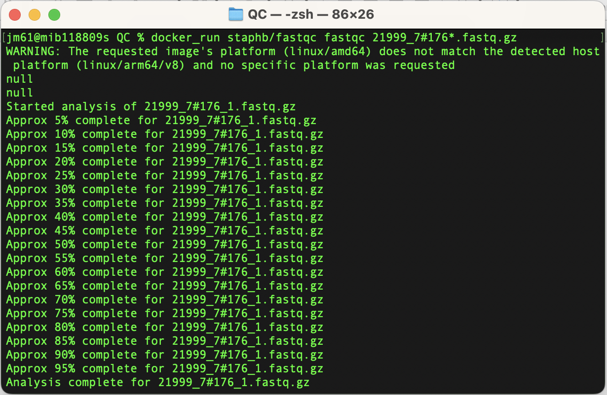
When youls you current directory (QC), the QC folder will now have the
following files
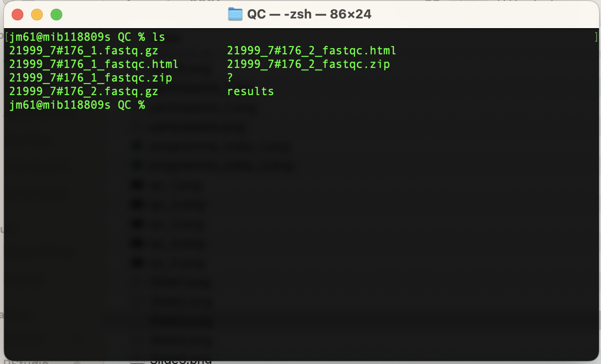
Let’s explore the 21999_7#176_1_fastqc.html
Basic Statistics
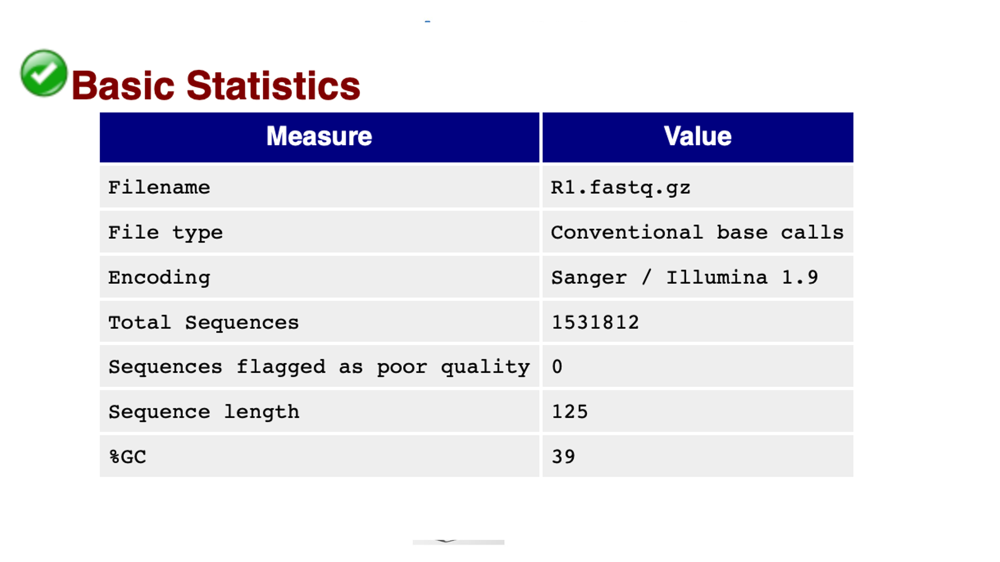
Looking at the HTML file for 21999_7#176_1.fastq.gz, the basic statistics are shown in the figure above. The %GC which is 39 as should be for S. pneumoniae. There are 0 reads assigned as bad quality indicating good quality sequence data.
The Basic Statistics module generates some simple composition statistics for the file analysed.
Filename: The original filename of the file which was analysed
File type: Says whether the file appeared to contain actual base calls or colorspace data which had to be converted to base calls.
Encoding: Says which ASCII encoding of quality values was found in this file.
Total Sequences: A count of the total number of sequences processed. There are two values reported, actual and estimated. At the moment these will always be the same. In the future it may be possible to analyse just a subset of sequences and estimate the total number, to speed up the analysis, but since we have found that problematic sequences are not evenly distributed through a file we have disabled this for now.
Sequence Length: Provides the length of the shortest and longest sequence in the set. If all sequences are the same length only one value is reported.
%GC: The overall %GC of all bases in all sequences.
Per base sequence quality
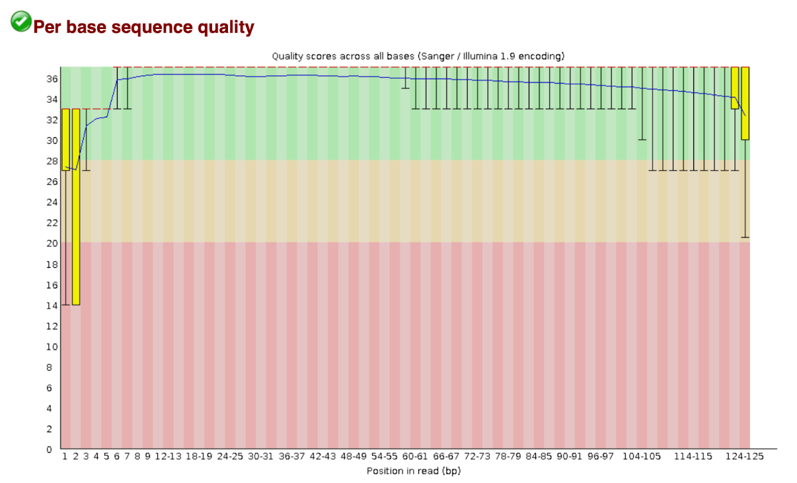
Scrolling down the HTML file is the ‘per base sequence quality’ figure, shown above. The graph represents the average quality of bases over the entire read length. The y-axis on the graph shows the quality scores. The space coloured in the green regions shows high quality, the amber coloured region below reflects acceptable quality and the regions in the red shows low quality. Therefore, if you observe the line in the red region for your sequence reads, it means the probability of a base call being incorrect is higher.
For each position a BoxWhisker type plot is drawn. The elements of the plot are as follows:
- The central red line is the median value
- The yellow box represents the inter-quartile range (25 - 75)
- The upper and lower whiskers represent the 10
- The blue line represents the mean quality
The quality of calls on most platforms will degrade as the run progresses, so it is common to see base calls falling into the orange areas towards the end of a read.
It should be mentioned that there are a number of different ways to encode a quality score in a FastQ file. FastQC attempts to automatically determine which encoding method was used, but in some very limited datasets it is possible that it will guess this incorrectly (ironically only when your data is universally very good!). The title of the graph will describe the encoding FatsQC thinks your file used.
Per tile sequence quality
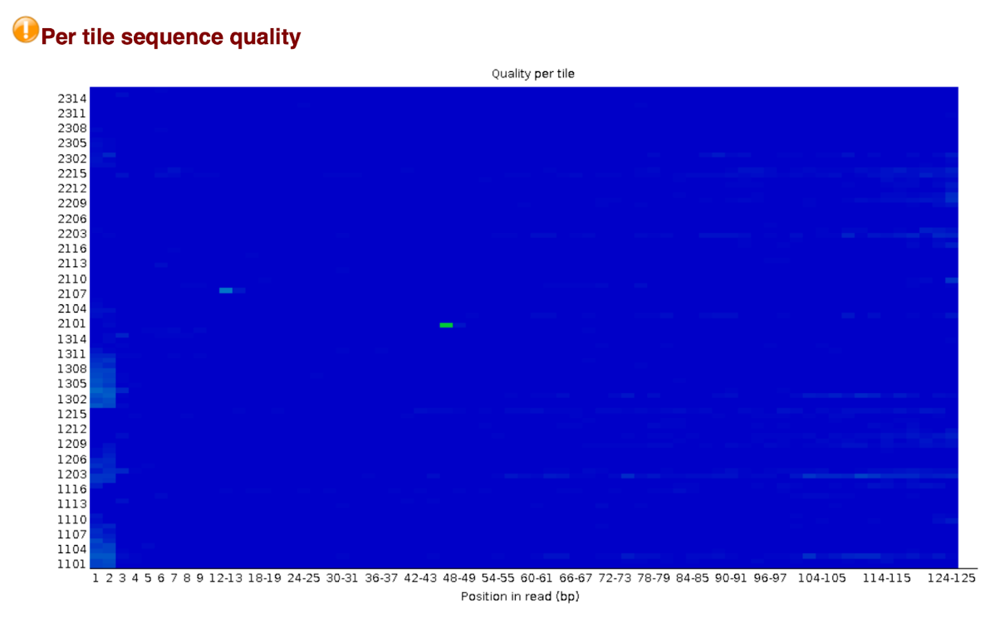
This graph will only appear in your analysis results if you’re using an illumina library which retains its original sequence identifiers. Encoded in these is the flowcell tile from which each read came. The graph allows you to look at the quality scores from each tile across all of your bases to see if there was a loss in quality associated with only one part of the flow cell.
The plot shows the deviation from the average quality for each tile. The colours are on a cold to hot scale, with cold colours being positions where the quality was at or above the average for that base in the run, and hotter colours indicate that a tile had worse qualities than other tiles for that base. A good plot should be blue all over.
Reasons for seeing warnings or errors on this plot could be transient problems such as bubbles going through the flowcell, or they could be more permanent problems such as smudges on the flowcell or debris inside the flowcell lane.
Per Sequence Quality Scores
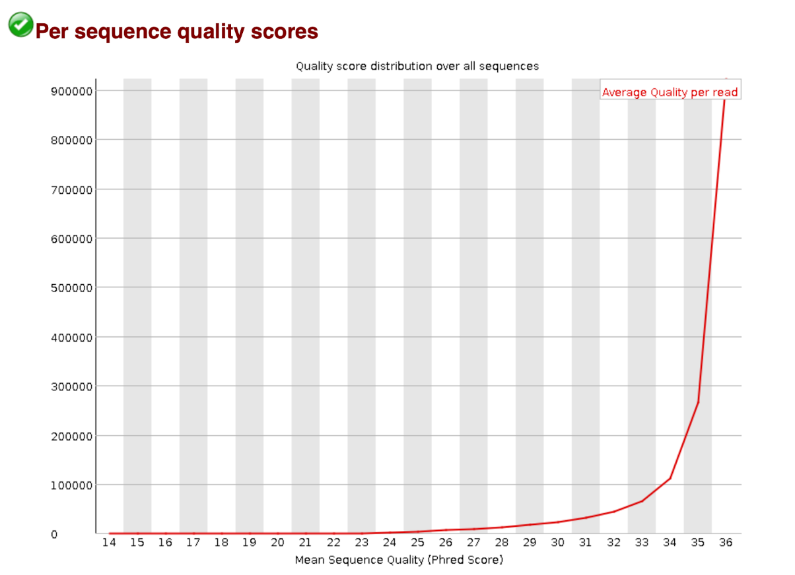
The per sequence quality score report allows you to see if a subset of your sequences have universally low quality values. It is often the case that a subset of sequences will have universally poor quality, often because they are poorly imaged (on the edge of the field of view etc), however these should represent only a small percentage of the total sequences.
If a significant proportion of the sequences in a run have overall low quality then this could indicate some kind of systematics problem - possible with just part of the run (for example one end of a flowcell).
Per Base Sequence Content
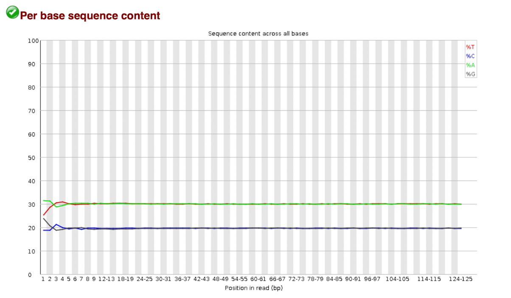
Per Base Sequence Content plots out the proportion of each base position in a file for which each of the four normal DNA bases has been called.
In a random library you would expect that there would be little to no difference between the different bases of a sequence run, so the lines in this plot should run parallel with each other, The relative amount of each base should reflect the overall amount of these bases in your genome, but in any case they should not be hugely imbalanced from each other.
It’s worth noting that some types of library will always produce biased sequence composition, normally at the start of the read. Libraries produced by priming using random hexamers (including nearly all RNA-seq libraries) and those which were fragmented using transposases inherit an intrinsic bias in the positions at which reads start. This bias does not concern an absolute sequence, but instead provides enrichment of a number of different k-mers at the 5’end of the reads. Whilst this is a true technical bias, it isn't something which can be corrected by trimming and in most cases does not seem to adversely affect the downstream analysis. It will however produce a warning or error in this module.
Per Sequence GC Content
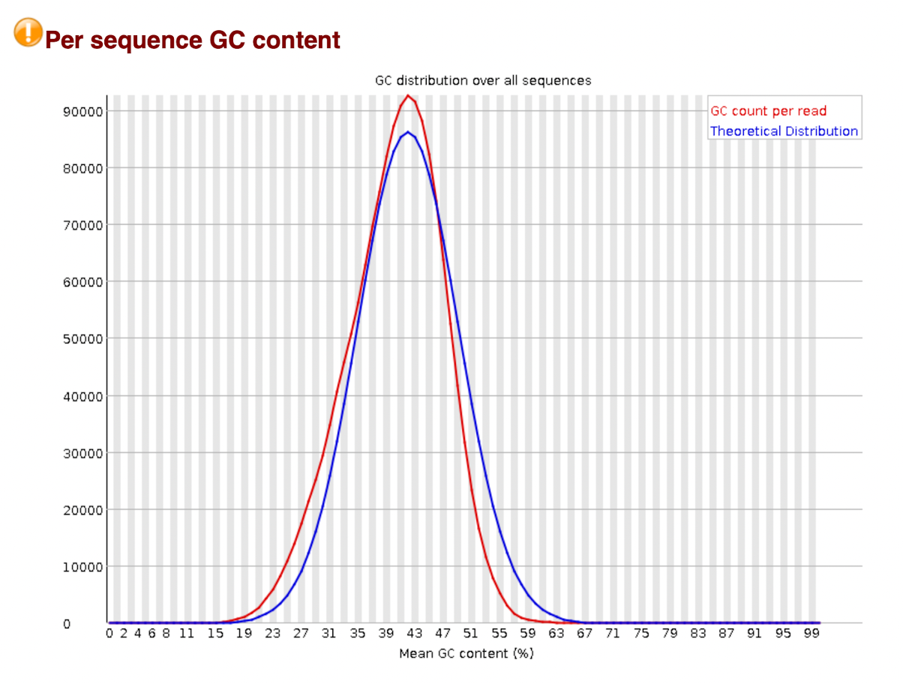
This module measures the GC content across the whole length of each sequence in a file and compares it to a modelled normal distribution of GC content.
In a normal random library you would expect to see a roughly normal distribution of GC content where the central peak corresponds to the overall GC content of the underlying genome. Since we don't know the GC content of the genome the modal GC content miscalculated from the observed data and used to build a reference distribution.
An unusually shaped distribution could indicate a contaminated library or some other kind of biased subset. A normal distribution which is shifted indicates some systematic bias which is independent of base position. If there is a systematics bias which creates a shifted normal distribution then this won't be flagged as an error by the module since it doesn't know what your genome’s GC content.
Per Base N Content
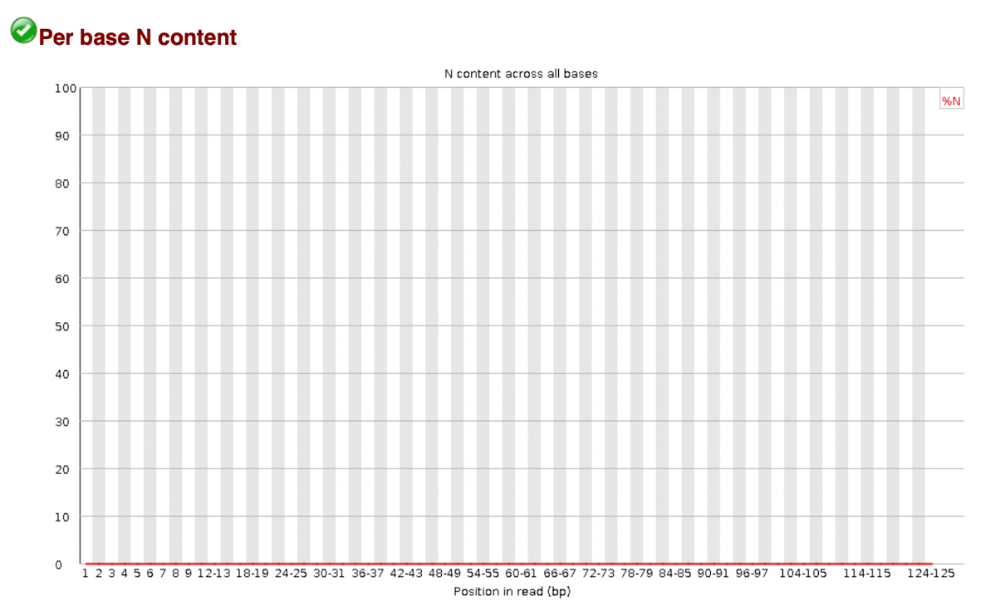
If a sequencer is unable to make a base call with sufficient confidence then it will normally substitute an N rather than a conventional base call.
This module plots out the percentage of base calls at each position for which an N was called.
It's not unusual to see a very low proportion of Ns appearing in a sequence especially nearer the end of a sequence. However, if this proportion rises above a few percent it suggests that the analysis pipeline was unable to interpret the data well enough to make valid base calls.
Sequence Length Distribution
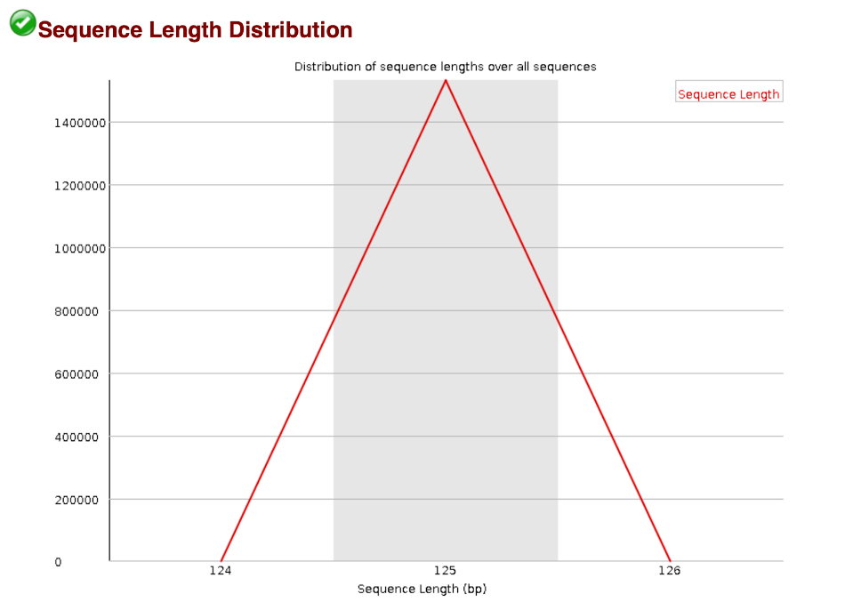
Some high throughput sequencers generate fragments of uniform length but others can contain reads of wildly varying lengths. Even with uniform length libraries, some pipelines will trim sequences to remove poor quality base calls from the end.
This module generates a graph showing the distribution of fragment sizes in the file which was analysed.
In many cases this will produce a simple graph showing a peak only at one size, but for variable length FastQ files this will show the relative amounts of each different size of sequence fragment.
Sequence Duplication Levels
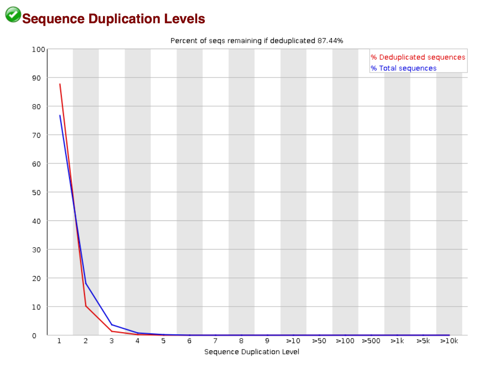
In a diverse library most sequences will occur only once in the final set. A low level of duplicating may indicate a very high level of coverage of the target sequence, but a high level of duplication is more likely to indicate some kind of enrichment bias (e.g., PCR over amplification).
This module counts the degree of duplication for every sequence in a library and creates a plot showing the relative number of sequences with different degrees of duplications.
To cut down on the memory requirements for this module only sequences which first appear in the first 100,000 sequences in each file are analysed, but this should be enough to get a good impression for the duplication levels in the whole file. Each sequence is tracked to the end of the file to give a representative count of the overall duplication level. To cut down on the amount of information in the final plot any sequence with more than 10 duplicates are placed into grouped bins to give a clear impression of the overall duplication level without having to show each individual duplication value.
Because the duplication detection requires an exact sequence match over the whole length of the sequence, any reads over 75bps in length are truncated to 50bp for the purposes of this analysis. Even so, longer reads are more likely to contain sequencing errors which will artificially increase the observed diversity and will tend to underrepresent highly duplicated sequences.
The plot shows the proportion of the library which is made up of sequences in each of the different duplication level bins. There are two lines in the plot. The blue line takes the full sequence set and shows how its duplication levels are distributed. In the red plot, the sequences are de-duplicated and the proportions shown are the proportions of the de-duplicated set which come from different duplication levels in the original data.
In a properly diverse library, most sequences should fall into the far left of the plot in both the red and blue limes. A general level of enrichment, indicating broad over sequencing in the library will tend to flatten the lines, lowering the low end and generally raising other categories. More specific enrichments of subsets, or the presence of low complexity contaminants will tend to produce spikes towards the right of the plot. These high duplication peaks will most often appear on the blue trace as they make up a high proportion of the original library, but usually disappear in the read trace as they make up an insignificant proportion of the deduplicated set. If peaks persist in the blue trace, then this suggests that there are a large number of different highly duplicated sequences which might indicate either a contaminant set or a very severe technical duplication.
The module also calculates an expected overall loss of sequence were the library to be duplicated. This headline figure is shown at the top of the plot and gives a reasonable impression of the potential overall level of loss.
Overrepresented sequences
A normal high-throughput library will contain a diverse set of sequences, with no individual sequence making up a tiny fraction of the whole. Finding that a single sequence is very over-represented in the set either means that it is highly biologically significant, or indicates that the library is contaminated , or not as diverse as you expected.
This module lists all of the sequences which make up more than 0.1.
For each overrepresented sequence the program will look for matches in a database of common contaminants and will report the hit it finds. Hits must be at least 20bp in length and have no more than 1 mismatch. Finding a hit doesn't necessarily mean that this is the source of the contamination, but may point you in the right direction. It's also worth pointing out that many adapter sequences are very similar to each other so you may get a hit reported which isn't technically correct, but which has a very similar sequence to the actual match.
Sequence Duplication Levels
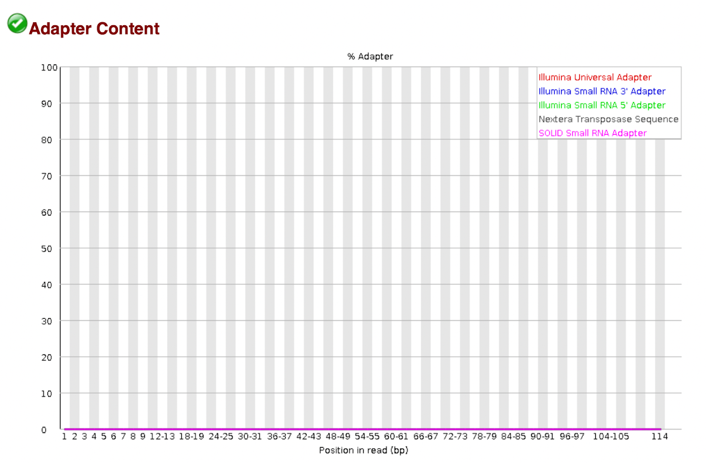
The k-mer content module will do a generic analysis of all of the k-mers in your library to find those which do not have even coverage through the length of your reads. This can find a number of different sources of bias in the library which can include the presence of read-through adapter sequences building up the end of your sequences.
You can however find that the presence of any overrepresented sequences in your library (such as adapter dimers) will cause the k-mer plot to be dominated by the k-mers these sequences contain, and that it's not always easy to see if there are other biases present in which you might be interested.
One obvious class of sequences which you might want to analyse are adapter sequences. It is useful to know if your library contains a significant amount of adapter in order to be able to assess whether you need to trim the adapter or not. Although the k-mer analysis can theoretically spot this kind of contamination it isn't always clear. This module therefore does a specific search for a set of separately defined k-mers and will give you a view of the total proportion of your library which contains these k-mers. A results trace will always be generated for all the sequences present in the adapter config file so you can see the adapter content of your library, even if it is low.
The plot itself shows a cumulative percentage count of the proportion of your library which has seen each of the adapter sequences at each position. Once a sequence has been seen in a read, it is counted as being present right through to the end of the read so the percentages you see will only increase as the read length goes on.
Here is the summary of all the statistics of all the statistics according to developer’s page: fastqc